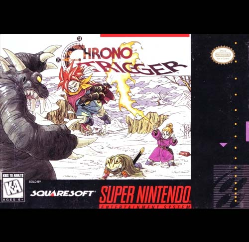

Chrono Trigger
Chrono Trigger (クロノ・トリガー Kurono Torigā?) é um jogo de RPG eletrônico desenvolvido pela Square Co. Foi lançado para o console Super Nintendo no Japão em março de 1995, e uma versão aprimorada para PlayStation foi lançada em novembro de 1999
Os sete personagens controláveis de Chrono Trigger vêm de diversas eras. Chrono Trigger começa em 1000 AD com Crono, Marle e Lucca. Crono é o protagonista silencioso, caracterizado como um jovem destemido que utiliza uma katana em batalha. Marle (a princesa Nadia) vive no castelo de Guardia. Apesar da vida confortável, ela gosta de ocultar sua identidade real. Lucca é amiga de Crono e um gênio da mecânica, cuja casa é lotada de equipamentos de laboratório e máquinas. Na era de 2300 AD se encontra Robo, um robô com personalidade quase humana, criado para ajudar a sociedade. A confiante Ayla vive em 65.000.000 BC. Dotada de incomparável força física, Ayla é a líder de sua tribo e os guia em uma guerra contra uma espécie de répteis humanóides.Os dois personagens restantes são Frog e Magus. Frog vive em 600 AD e foi um escudeiro chamado Glenn, até ser transformado em um sapo antropomórfico por Magus, que também matou seu amigo Cyrus. Frog dedica sua vida à proteção da rainha Leene, mas também deseja vingar Cyrus. Enquanto isso, Guardia em 600 AD se encontra em guerra com uma raça de demônios e animais inteligentes sob a liderança de Magus, um poderoso feiticeiro. O passado de Magus é coberto por mistérios: ele outrora era conhecido como Janus, o jovem príncipe do reino de Zeal, destruído por Lavos em 12000 BC. Tal acontecimento o mandou para outra era, onde ele arquiteta um plano de vingança contra Lavos e tenta descobrir o destino de sua irmã, Schala. Lavos, que desperta e devasta o mundo em 1999 AD, é um parasita extraterrestre que se alimenta do DNA do planeta.